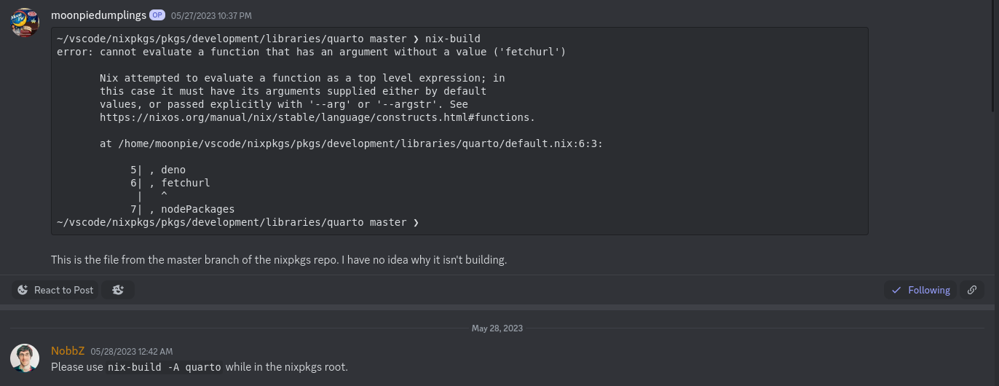
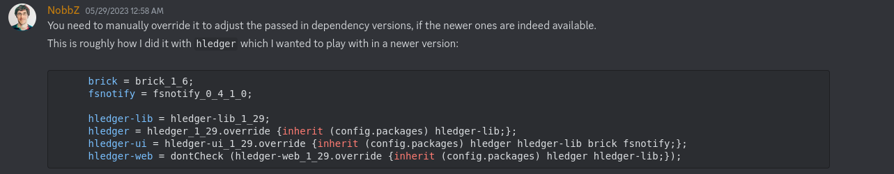

Packaging quarto using nix
Skip to the conclusion if you want to know how to use the efforts of my hard work, although it only works on x6_64 linux.
What is quarto?
To explain quarto, I first have to explain jupyter notebooks, and quarto’s predecessor, fastpages.
Fastpages is a blogging platform built on jekyll, a static site generator. Static sites are websites that do not connect to a backend server, the user’s browser does all the rendering. Static site generators do all the hard work of creating these, by converting a very human readable format, like markdown, to pretty looking html, which is what browsers render.
Fastpages adds onto the features of jekyll, by adding support for jupyter notebooks. Jupyter is a technology that allows users to combine code, multimedia, and text into a single document, for any purposes that one might use it. It’s usually popular for data science, as code is used to generate diagrams, but I really like it for testing snippets of code, as you can have multiple pieces of code in one document, and then run and debug them independently of eachother. Fastpagess can convert all of this, even automatically running code and creating any interactive elements, and then putting it all up on the internet as a static site.
Fastpages is also deprecated. On the github page, which is archived, it recommends you switch to quarto.
Quarto adds more features on top of fastpages, while also removing some features. Fastpages is primarily designed for blogging, whereas quarto also has support for generating books, pdf’s, and websites.
However, quarto lacks some features, as it uses it’s own static site generator, rather than jekyll. The biggest and most noticable one, is the Liquid template language that my computer science teacher uses to dynamically render his schedule page.
But for my purposes, quarto works fine. This blogpost you are reading, was generated using quarto.
What is nix?
Nix is multiple things. Nix is a linux distribution, an package repository, a package manager, a programming language, and a configuration as code system.
Right now, I am trying to use it as a package manager — specifically, to give myself the quarto tool.
I’ve selected nix because it focuses on reproducible builds, across Mac, and Linux and x86_64, and arm64. This enables a multitude of devices to get packages with an identical configuration to me.
Using Nix
{ pkgs ? import <nixpkgs> {} } :
pkgs.mkShell {
packages = with pkgs; [ python310Full quarto jupyter pandoc deno ];
}This is a sample shell.nix file. If you run the nix-shell command line tool while in the same working directory, or using the filename as an argument, it will use this bit of nix code to create an shell environment for you.
Nix is a functional programming langauge. Unlike a language like python or java, where everything is an object, in nix, everything is a function. The colon : declares the arguments for a function. The ? declares a default argument for the variable, pkgs, to be used in the function. This is important, because without this declarion, the program does now know where to get packages from.
The above shell.nix works great. However, it installs an older version of quarto, 1.2, as only an older version of quarto is packaged in the nixpkgs repository. I want the newest version, 1.3.
Here is the code used to create the quarto package, called a derivation:
Show derivation
{ stdenv
, lib
, pandoc
, esbuild
, deno
, fetchurl
, nodePackages
, rWrapper
, rPackages
, extraRPackages ? []
, makeWrapper
, python3
, extraPythonPackages ? ps: with ps; []
}:
stdenv.mkDerivation rec {
pname = "quarto";
version = "1.2.475";
src = fetchurl {
url = "https://github.com/quarto-dev/quarto-cli/releases/download/v${version}/quarto-${version}-linux-amd64.tar.gz";
sha256 = "sha256-oyKjDlTKt2fIzirOqgNRrpuM7buNCG5mmgIztPa28rY=";
};
nativeBuildInputs = [
makeWrapper
];
patches = [
./fix-deno-path.patch
];
postPatch = ''
# Compat for Deno >=1.26
substituteInPlace bin/quarto.js \
--replace 'Deno.setRaw(stdin.rid, ' 'Deno.stdin.setRaw(' \
--replace 'Deno.setRaw(Deno.stdin.rid, ' 'Deno.stdin.setRaw('
'';
dontStrip = true;
preFixup = ''
wrapProgram $out/bin/quarto \
--prefix PATH : ${lib.makeBinPath [ deno ]} \
--prefix QUARTO_PANDOC : ${pandoc}/bin/pandoc \
--prefix QUARTO_ESBUILD : ${esbuild}/bin/esbuild \
--prefix QUARTO_DART_SASS : ${nodePackages.sass}/bin/sass \
--prefix QUARTO_R : ${rWrapper.override { packages = [ rPackages.rmarkdown ] ++ extraRPackages; }}/bin/R \
--prefix QUARTO_PYTHON : ${python3.withPackages (ps: with ps; [ jupyter ipython ] ++ (extraPythonPackages ps))}/bin/python3
'';
installPhase = ''
runHook preInstall
mkdir -p $out/bin $out/share
rm -r bin/tools
mv bin/* $out/bin
mv share/* $out/share
runHook preInstall
'';
meta = with lib; {
description = "Open-source scientific and technical publishing system built on Pandoc";
longDescription = ''
Quarto is an open-source scientific and technical publishing system built on Pandoc.
Quarto documents are authored using markdown, an easy to write plain text format.
'';
homepage = "https://quarto.org/";
changelog = "https://github.com/quarto-dev/quarto-cli/releases/tag/v${version}";
license = licenses.gpl2Plus;
maintainers = with maintainers; [ mrtarantoga ];
platforms = [ "x86_64-linux" ];
sourceProvenance = with sourceTypes; [ binaryNativeCode binaryBytecode ];
};
}I don’t want to bore you with details, but in short, it downloads an older version of quarto than the newest.
Packaging quarto
Nix is very poorly documented. The recommended way of getting help with nix is to ask for help on the discord. So that is what I did. The first thing I asked was how to get a newer version of quarto:
I started out by asking how to update the version of the quarto package. I started out to do so on my own, by cloning the nixpkgs github repo, and attempting to build nixpkgs, but I couldn’t figure out how to build it at first, which is when I asked.

Which didn’t work, because I did not want to download the whole nixpkgs. I wanted to store the nix derivation to build. The answer: use an ovveride:
I was then told to use the overrideAttrs function, which overrides specific attributes, essentially variables, of the derivation, another type of function, used to build the program.
My first attempt was not too good.
{ pkgs ? import <nixpkgs> {} } :
let
quarto = pkgs.quarto.overrideAttrs (oldAttrs: rec {
version = "1.3.361";
});
in
pkgs.mkShell {
packages = with pkgs; [ python310Full quarto jupyter pandoc deno mkpasswd ];
}A simple shell.nix that replaced the version attribute of quarto. I shared this excitedly, thinking I had figured this out on my own, only to be told that this change was purely cosmetic, and the new version of quarto wasn’t actually installed. And they were right.
[nix-shell:~/vscode/quartotest]$ which quarto
/nix/store/9qy0kpll3r755c6i0717405dilhffdrd-quarto-1.3.361/bin/quartoIt looks right, until you check deeper:
[nix-shell:~/vscode/quartotest]$ quarto --version
1.2.475So a deeper override was needed. I needed to override the src attribute, which determines where to download the files used to package the application.
Second attempt!
{ pkgs ? import <nixpkgs> {} } :
let
quarto = pkgs.quarto.overrideAttrs (oldAttrs: rec {
version = "1.3.361";
src = fetchurl {
url = "https://github.com/quarto-dev/quarto-cli/releases/download/v${version}/quarto-${version}-linux-amd64.tar.gz";
sha256 = "sha256-VEYUEI4xzQPXlyTbCThAW2npBCZNPDJ5x2cWnkNz7RE=";
};
});
in
pkgs.mkShell {
packages = with pkgs; [ python310Full quarto jupyter pandoc deno mkpasswd ];
}But this errored as well.
~/vscode/quartotest master !4 ?1 ❯ nix-shell 2m 56s
error: undefined variable 'fetchurl'
at /home/moonpie/vscode/quartotest/shell.nix:5:19:
4| version = "1.3.361";
5| src = fetchurl {
| ^
6| url = "https://github.com/quarto-dev/quarto-cli/releases/download/v${version}/quarto-${version}-linI was confused? Why did this error? I had copied exactly what was in the derivation used to build the package?
Later, I figured out why. When a package is built, the dependencies are declared in the beginning of the package:
{
Dependencies_Here
} : stdenv.mkDerivation.restofpackageIn nix, every single thing is a function. When creation a function in nix, the curly brackets before the function declare the arguments that the function will take:
function = {arg1, arg2} : functionhereBut when creating a package, this syntax plays another role. The arguments of the function act as a dependency list, by declaring what packages are necessary to build the derivation. This prevents the build from being tainted by anything that is not explicitly declared. However, because overrides are not the same as derivations, they act differently.
But to get around this error when using the override function:
Success!
{ pkgs ? import <nixpkgs> {} } :
let
quarto = pkgs.quarto.overrideAttrs (oldAttrs: rec {
version = "1.3.361";
src = pkgs.fetchurl {
url = "https://github.com/quarto-dev/quarto-cli/releases/download/v${version}/quarto-${version}-linux-amd64.tar.gz";
sha256 = "sha256-vvnrIUhjsBXkJJ6VFsotRxkuccYOGQstIlSNWIY5nuE=";
};
});
in
pkgs.mkShell {
packages = with pkgs; [ python310Full quarto jupyter pandoc deno mkpasswd ];
}And it worked:
[nix-shell:/tmp/test]$ quarto --version
1.3.361Except it didn’t. When I actually tried to render my project:
[nix-shell:~/vscode/quartotest]$ quarto render
[1/4] about.qmd
Could not find data file templates/styles.citations.htmlSince this file couldn’t be found on my system, I tried to find it on the internet.
And find it I did, in the data-files section of the information about the pandoc 3.1 package
data-files:
-- templates
data/templates/styles.html
data/templates/styles.citations.htmlFirst, I checked what version of the pandoc that Nix had in their repositories. They only had 2.1.9, which was too old for the version of quarto I had.
But just in case, I asked on the github discussions page for quarto. And yes, quarto 1.3, the version I wanted, did require pandoc 3.0, which nix did not have packaged.
Except it did, although the package wasn’t in the dependencies. So I first tried to install it independently, using the nix-shell -p package tool
Except I got an error
~/vscode/test ❯ nix-shell -p haskellPackages.pandoc_3_1_2
this derivation will be built:
/nix/store/63pnk32wsdczfk3nkl071w9y69yy5wmi-pandoc-3.1.2.drv
building '/nix/store/63pnk32wsdczfk3nkl071w9y69yy5wmi-pandoc-3.1.2.drv'...
setupCompilerEnvironmentPhase
Build with /nix/store/4wjl91hrizxghwqy18a1337gq2y9mh40-ghc-9.2.7.
unpacking sources
unpacking source archive /nix/store/7ncxphrr3nff9jb3j4w9ksl6ggznqhm6-pandoc-3.1.2.tar.gz
source root is pandoc-3.1.2
setting SOURCE_DATE_EPOCH to timestamp 1000000000 of file pandoc-3.1.2/xml-light/Text/Pandoc/XML/Light/Types.hs
patching sources
compileBuildDriverPhase
setupCompileFlags: -package-db=/build/tmp.yaRUozaznX/setup-package.conf.d -j16 +RTS -A64M -RTS -threaded -rtsopts
[1 of 1] Compiling Main ( /nix/store/4mdp8nhyfddh7bllbi7xszz7k9955n79-Setup.hs, /build/tmp.yaRUozaznX/Main.o )
Linking Setup ...
configuring
configureFlags: --verbose --prefix=/nix/store/7983f3r6gpgvf17dn1k2c05wma708xdn-pandoc-3.1.2 --libdir=$prefix/lib/$compiler --libsubdir=$abi/$libname --datadir=/nix/store/zdc55i48g6hpbwckiwk6s6iraf30hh99-pandoc-3.1.2-data/share/ghc-9.2.7 --with-gcc=gcc --package-db=/build/tmp.yaRUozaznX/package.conf.d --ghc-options=-j16 +RTS -A64M -RTS --disable-split-objs --enable-library-profiling --profiling-detail=exported-functions --disable-profiling --enable-shared --disable-coverage --enable-static --disable-executable-dynamic --enable-tests --disable-benchmarks --enable-library-vanilla --disable-library-for-ghci --ghc-option=-split-sections -f-trypandoc --extra-lib-dirs=/nix/store/4g9phbpakh51bbw2n391vipz9r5z56kw-ncurses-6.4/lib --extra-lib-dirs=/nix/store/mnq0hqsqivdbaqzmzc287l0z9zw8dp15-libffi-3.4.4/lib --extra-lib-dirs=/nix/store/0ssnwyy41aynhav7jr4dz1y01lfzi86f-gmp-with-cxx-6.2.1/lib
Using Parsec parser
Configuring pandoc-3.1.2...
Setup: Encountered missing or private dependencies:
doctemplates >=0.11 && <0.12,
gridtables >=0.1 && <0.2,
jira-wiki-markup >=1.5.1 && <1.6,
mime-types >=0.1.1 && <0.2,
pandoc-types >=1.23 && <1.24,
texmath >=0.12.7 && <0.13
error: builder for '/nix/store/63pnk32wsdczfk3nkl071w9y69yy5wmi-pandoc-3.1.2.drv' failed with exit code 1Except all the dependencies that the error message wanted, existed in nixpkgs.
Here’s doctemplates
Here’s gridtables
And so on. It was like, even though pandoc required these packages, it couldn’t see them. They all had the format packagename_version, as opposed to simply packagename, which would be an older package.
So I asked on discord, again.

This one user, NobbZ, helps people so much that people joke that he is the documentation.
I tried their solution, and it didn’t work. Apparently, this solution was designed for the newer feature of nix, flakes, which I wasn’t using.
But with some adjustment, I managed to figure out how to use the override feature on my own, with the same solution that NobbZ sent me seconds later:
Trying to get override working
{ pkgs ? import <nixpkgs> {} } :
let
quarto = pkgs.quarto.overrideAttrs (oldAttrs: rec {
version = "1.3.361";
src = pkgs.fetchurl {
url = "https://github.com/quarto-dev/quarto-cli/releases/download/v${version}/quarto-${version}-linux-amd64.tar.gz";
sha256 = "sha256-vvnrIUhjsBXkJJ6VFsotRxkuccYOGQstIlSNWIY5nuE=";
};
});
/* pandoc = pkgs.haskellPackages.callCabal2nix "pandoc" (fetchTarball {
url = "https://github.com/jgm/pandoc/archive/refs/tags/3.1.2.tar.gz";
sha256 = "1h928w4ghbxg5whq7d9nkrfll2abvmbkc45adfgv35rfhcpkiiv9";
}) {};*/
doctemplates = pkgs.haskellPackages.doctemplates_0_11;
gridtables = pkgs.haskellPackages.gridtables_0_1_0_0;
jira-wiki-markup = pkgs.haskellPackages.jira-wiki-markup_1_5_1;
mime-types = pkgs.haskellPackages.mime-types_0_1_1_0;
pandoc-types = pkgs.haskellPackages.pandoc-types_1_23;
texmath = pkgs.haskellPackages.texmath_0_12_7_1;
pandoc = pkgs.haskellPackages.pandoc_3_1_2.override {inherit doctemplates gridtables jira-wiki-markup mime-types pandoc-types texmath;};
in
pkgs.mkShell {
packages = with pkgs; [ python310Full quarto jupyter pandoc deno mkpasswd ];
}Except this errors:
Warning:
This package indirectly depends on multiple versions of the same package. This is very likely to cause a compile failure.
package http-client (http-client-0.7.13.1-52kzOBAMbxmJrzoQZgatPf) requires mime-types-0.1.0.9-Gdz1G1mhqziCfo3C8KZHz7
package pandoc (pandoc-3.1.2) requires mime-types-0.1.1.0-4FUch8wD40c6kQtGdyJOSM
package texmath (texmath-0.12.7.1-BbrGid5okuSI4hfeGBAcF8) requires pandoc-types-1.22.2.1-1cCcarshT2W3DaxppqWytd
package commonmark-pandoc (commonmark-pandoc-0.2.1.3-OwUzhyyJ0cDzxfYXzbAci) requires pandoc-types-1.22.2.1-1cCcarshT2W3DaxppqWytd
package citeproc (citeproc-0.8.1-LP74PTBZCEoHiNCfXfUYdM) requires pandoc-types-1.22.2.1-1cCcarshT2W3DaxppqWytd
package pandoc (pandoc-3.1.2) requires pandoc-types-1.23-AC7tSm0fcRIGMZsmro9kaK
package pandoc (pandoc-3.1.2) requires pandoc-types-1.23-AC7tSm0fcRIGMZsmro9kaK
** abort because of serious configure-time warning from Cabal
error: builder for '/nix/store/ibawyigbdn9bs1gs9hc0mgzqraqfxhy0-pandoc-3.1.2.drv' failed with exit code 1Essentially, a dependency error. Doctemplates also required a package that wasn’t under the default of packagename, but rather packagename_version.
Another user proceeded to chime in with their solution:
See cdepillabout’s solution
let
pkgs = import <nixpkgs> {};
pandoc = pkgs.haskellPackages.pandoc_3_1_2.overrideScope (hfinal: hprev: {
doctemplates = hprev.doctemplates_0_11;
gridtables = hprev.gridtables_0_1_0_0;
jira-wiki-markup = hprev.jira-wiki-markup_1_5_1;
mime-types = hprev.mime-types_0_1_1_0;
pandoc-types = hprev.pandoc-types_1_23;
texmath = hprev.texmath_0_12_7_1;
});
in
pkgs.mkShell {
packages = [pandoc];
}And this worked! Except it didn’t.
[nix-shell:~/vscode/quartotest]$ pandoc
bash: pandoc: command not found
[nix-shell:~/vscode/quartotest]$ which pandoc
which: no pandoc in (/nix/store/kbcrs84s1x8yd5bp1nq6q6ihda8nd2lp-bash-interactive-5.2-p15/bin:/nix/store/a9q4y7vw1fgs990bs5mpd3p50mc0iz27-python3-3.10.11/bin:/nix/store/nh8iz5l2zn5nbk19qxdw575a5fhfcajw-quarto-1.3.361/bin:/nix/store/ar2lzr4kr4pi1zgx3w8hl6fkny3bql53-python3.10-notebook-6.5.2/bin:/nix/store/ai5lxg5vzjsfk9zkyn65ndq81na2mm5c-python3.10-babel-2.12.1/bin:/nix/store/95cxzy2hpizr23343b8bskl4yacf4b3l-python3-3.10.11/bin:/nix/store/5ii8sm9yh01ny05bl1wjdv6pkdjb8bw0-python3.10-jupyter-core-5.2.0/bin:/nix/store/pkgr71n4dy7h9lp00paf6k3llfa95ig0-python3.10-Send2Trash-1.8.1b0/bin:/nix/store/x1kk4hlx0zl12igvr6v0pk2cq2720fbh-python3.10-jupyter_client-8.0.3/bin:/nix/store/9icvaw0dgk7258m564xlh513nz6xis1m-python3.10-nbformat-5.7.3/bin:/nix/store/6svh49hf9pq5hwavgyb642v5a0pjnn4a-python3.10-jsonschema-4.17.3/bin:/nix/store/15jn0r39wg0ripjzjfxj9arcv53qxck9-python3.10-nbclassic-0.5.2/bin:/nix/store/jjy30kw6pw2mq54ig6lrm84ds91a9snf-python3.10-ipython-8.11.0/bin:/nix/storeApparently, in pandoc 3.0, the binary and the library have been split into two seperate packages. In nixpkgs, the library can be found in the haskellPackages.pandoc_3_1_2, and the binary can be found in haskellPackages.pandoc-cli.
nix-shell -p haskellPackages.pandoc-cli
Setup: Encountered missing or private dependencies:
doctemplates >=0.11 && <0.12, pandoc >=3.0
...
error: builder for '/nix/store/hzzqnffj08r9qc0xi3b4ydi7w91dn4m0-pandoc-server-0.1.drv' failed with exit code 1
error: 1 dependencies of derivation '/nix/store/arbq7vgw539xyd4l0y5x3jyhhra30v91-pandoc-cli-0.1.1.drv' failed to buildThe pandoc-cli package is broken, for the exact same error that the pandoc library won’t compile for.
So I try my own override:
{ pkgs ? import <nixpkgs> {} } :
let
quarto = pkgs.quarto.overrideAttrs (oldAttrs: rec {
version = "1.3.361";
src = pkgs.fetchurl {
url = "https://github.com/quarto-dev/quarto-cli/releases/download/v${version}/quarto-${version}-linux-amd64.tar.gz";
sha256 = "sha256-vvnrIUhjsBXkJJ6VFsotRxkuccYOGQstIlSNWIY5nuE=";
};
});
pandoc = pkgs.haskellPackages.pandoc_3_1_2.overrideScope (hfinal: hprev: {
doctemplates = hprev.doctemplates_0_11;
gridtables = hprev.gridtables_0_1_0_0;
jira-wiki-markup = hprev.jira-wiki-markup_1_5_1;
mime-types = hprev.mime-types_0_1_1_0;
pandoc-types = hprev.pandoc-types_1_23;
texmath = hprev.texmath_0_12_7_1;
});
pandoc-cli = pkgs.haskellPackages.pandoc-cli.overrideScope (hfinal: hprev: {
hslua-core = hprev.hslua-core_2_3_1;
lua = hprev.lua_2_3_1;
});
in
pkgs.mkShell {
packages = [ pkgs.python310Full quarto pkgs.jupyter pandoc pandoc-cli pkgs.deno ];
}But this also errors:
Show error
Using Parsec parser
Configuring tasty-hslua-1.0.2...
Setup: Encountered missing or private dependencies:
hslua-core >=2.0 && <2.3
error: builder for '/nix/store/nmhz8xnc24xw86q573v515n3q8m9l0y5-tasty-hslua-1.0.2.drv' failed with exit code 1
error: 1 dependencies of derivation '/nix/store/8q4ni7s2am50xbbbkcdjk85szyvq3jk8-hslua-2.2.1.drv' failed to build
error: 1 dependencies of derivation '/nix/store/hcysycpqkqv4kd3qmkwzyi7pkaqszqyy-hslua-marshalling-2.2.1.drv' failed to build
error: 1 dependencies of derivation '/nix/store/h4c32n03d305njipsiw4rzc8rq52l2bc-hslua-packaging-2.2.1.drv' failed to build
error: 1 dependencies of derivation '/nix/store/y655vw1bdq8a9j818k16y7228nlsf86y-hslua-cli-1.4.1.drv' failed to build
error: 1 dependencies of derivation '/nix/store/xkkp4cj1yfwjpczc6k7y08gxdqdbfh4n-pandoc-2.19.2.drv' failed to build
error: 1 dependencies of derivation '/nix/store/sc44mnc1ngxfxi7h3f6qrrvnvldla4w3-pandoc-cli-0.1.1.drv' failed to build
~/vscode/quartotest master !4 ?9 ❯ But the hslua-core version I want was packaged in nixpkgs, similar to doctemplates, or gridtables. So I did a further override.
Show/hide
{ pkgs ? import <nixpkgs> {} } :
let
quarto = pkgs.quarto.overrideAttrs (oldAttrs: rec {
version = "1.3.361";
src = pkgs.fetchurl {
url = "https://github.com/quarto-dev/quarto-cli/releases/download/v${version}/quarto-${version}-linux-amd64.tar.gz";
sha256 = "sha256-vvnrIUhjsBXkJJ6VFsotRxkuccYOGQstIlSNWIY5nuE=";
};
});
pandoc = pkgs.haskellPackages.pandoc_3_1_2.overrideScope (hfinal: hprev: {
doctemplates = hprev.doctemplates_0_11;
gridtables = hprev.gridtables_0_1_0_0;
jira-wiki-markup = hprev.jira-wiki-markup_1_5_1;
mime-types = hprev.mime-types_0_1_1_0;
pandoc-types = hprev.pandoc-types_1_23;
texmath = hprev.texmath_0_12_7_1;
tasty-hslua = hprev.tasty-hslua_1_1_0;
hslua-marshalling = hprev.hslua-marshalling_2_3_0;
hslua-aeson = hprev.hslua-aeson_2_3_0_1;
hslua = hprev.hslua_2_3_0;
});
pandoc-cli = pkgs.haskellPackages.pandoc-cli.overrideScope (hfinal: hprev: {
hslua-core = hprev.hslua-core_2_3_1;
lua = hprev.lua_2_3_1;
tasty-hslua = hprev.tasty-hslua_1_1_0;
hslua-marshalling = hprev.hslua-marshalling_2_3_0;
hslua-aeson = hprev.hslua-aeson_2_3_0_1;
hslua = hprev.hslua_2_3_0;
});
in
pkgs.mkShell {
packages = [ pkgs.python310Full quarto pkgs.jupyter pandoc pandoc-cli pkgs.deno ];
}Which still errors:
Using Parsec parser
Configuring hslua-typing-0.1.0...
Setup: Encountered missing or private dependencies:
hslua-core >=2.3 && <2.4, hslua-marshalling >=2.3 && <2.4
error: builder for '/nix/store/kbmfxjy0ycwwg6r6zsp9q9v1pfkmggnw-hslua-typing-0.1.0.drv' failed with exit code 1
error: 1 dependencies of derivation '/nix/store/nj4smnyrkaf52qx98r1wa0r1gdnjbwxk-hslua-2.3.0.drv' failed to buildI quickly realized, that the updated set of haskell packages in nixpkgs, is broken all the way down. I found a relevant github issue. In this issue, somene had modified the derivation of the haskellPackages, to get pandoc-cli to work.
I used their fork of nixpkgs to give myself pandoc-cli.
~/vscode/quartotest master +3 !1 ❯ nix-shell -p haskellPackages.pandoc-cli -I nixpkgs=https://github.com/seam345/nixpkgs/archive/89e6e477c8357a087e863db562d2fa8d9fe5ba29.tar.gz
[nix-shell:~/vscode/quartotest]$ pandoc --version
pandoc 3.1
Features: +server +lua
Scripting engine: Lua 5.4
User data directory: /home/moonpie/.local/share/pandoc
Copyright (C) 2006-2023 John MacFarlane. Web: https://pandoc.org
This is free software; see the source for copying conditions. There is no
warranty, not even for merchantability or fitness for a particular purpose.This actually worked, and I got pandoc-cli with the 3.0 version of pandoc. However, I couldn’t get quarto to use pandoc-cli rather than the normal pandoc version, so quarto still wasn’t working.
Later, cdepillabout chimed in again. Here is their solution:
Show/hide
let
nixpkgs-src = fetchTarball {
# nixpkgs-unstable as of 2023-05-31
url = "https://github.com/NixOS/nixpkgs/archive/58c85835512b0db938600b6fe13cc3e3dc4b364e.tar.gz";
sha256 = "0bkhaiaczj25s6hji2k9pm248jhfbiaqcfcsfk92bbi7kgzzzpif";
};
my-overlay = final: prev: {
pandoc_1_3 =
let
inherit (final.haskell.lib.compose) disableCabalFlag markUnbroken;
in
final.lib.pipe
final.haskellPackages.pandoc-cli
[
markUnbroken
(disableCabalFlag "lua")
(p: p.overrideScope (hfinal: hprev: {
doctemplates = hprev.doctemplates_0_11;
gridtables = hprev.gridtables_0_1_0_0;
hslua-cli = null;
jira-wiki-markup = hprev.jira-wiki-markup_1_5_1;
mime-types = hprev.mime-types_0_1_1_0;
pandoc = hprev.pandoc_3_1_2;
pandoc-lua-engine = null;
pandoc-server = markUnbroken hprev.pandoc-server;
pandoc-types = hprev.pandoc-types_1_23;
texmath = hprev.texmath_0_12_7_1;
}))
];
quarto_1_3 =
let
quarto-version = "1.3.361";
in
(final.quarto.override { pandoc = final.pandoc_1_3; }).overrideAttrs (oldAttrs: {
version = quarto-version;
src = final.fetchurl {
url = "https://github.com/quarto-dev/quarto-cli/releases/download/v${quarto-version}/quarto-${quarto-version}-linux-amd64.tar.gz";
sha256 = "sha256-vvnrIUhjsBXkJJ6VFsotRxkuccYOGQstIlSNWIY5nuE=";
};
});
};
pkgs = import nixpkgs-src { overlays = [ my-overlay ]; };
in
pkgs.quarto_1_3Although I modified it a bit, to be
...
in
pkgs.mkShell {
packages = [pkgs.quarto_1_3];
}Because it is the mkShell package that creates the shell environment.
This solution works, and gets me quarto 1.3, and also replaces the default dependency of quarto, on pandoc 2.1.9, with one on pandoc-cli.
[nix-shell:~/vscode/quartotest]$ quarto pandoc --version
pandoc 3.1.2
Features: +server -lua
Scripting engine: none
User data directory: /home/moonpie/.local/share/pandoc
Copyright (C) 2006-2023 John MacFarlane. Web: https://pandoc.org
This is free software; see the source for copying conditions. There is no
warranty, not even for merchantability or fitness for a particular purpose.However, it has a caveat. It compiles pandoc without lua support, as those packages where the ones that were broken in nixpkgs.
But apparently, quarto needs lua suppport.
[nix-shell:~/vscode/quartotest]$ quarto render
[1/9] about.qmd
This version of pandoc has been compiled without Lua support.So yeah. That doesn’t work.
But meanwhile, the quarto team responded to a question I asked on their github discussion page. I had asked if quarto requires either the pandoc binary, or the pandoc library.
They replied, and said that a pandoc binary, is actually included inside the tarball and the packages they have created. As part of the build system, the package is fairly self reliant, not needing much in terms of external dependencies.
So that’s what I did.
I modified the derivation so that it uses the built in pandoc, rather than replacing it with an external one.
Show/hide
{ pkgs ? import <nixpkgs> {} } :
let
pandoc = null;
extraRPackages = [];
extraPythonPackages = ps: with ps; [];
quarto = (pkgs.quarto.overrideAttrs (oldAttrs: rec {
version = "1.3.361";
src = pkgs.fetchurl {
url = "https://github.com/quarto-dev/quarto-cli/releases/download/v${version}/quarto-${version}-linux-amd64.tar.gz";
sha256 = "sha256-vvnrIUhjsBXkJJ6VFsotRxkuccYOGQstIlSNWIY5nuE=";
};
patches = [];
preFixup = ''
wrapProgram $out/bin/quarto \
--prefix PATH : ${pkgs.lib.makeBinPath [ pkgs.deno ]} \
--prefix QUARTO_PANDOC : $out/bin/tools/pandoc \
--prefix QUARTO_ESBUILD : ${pkgs.esbuild}/bin/esbuild \
--prefix QUARTO_DART_SASS : ${pkgs.nodePackages.sass}/bin/sass \
--prefix QUARTO_R : ${pkgs.rWrapper.override { packages = [ pkgs.rPackages.rmarkdown ] ++ extraRPackages; }}/bin/R \
--prefix QUARTO_PYTHON : ${pkgs.python3.withPackages (ps: with ps; [ jupyter ipython ] ++ (extraPythonPackages ps))}/bin/python3
'';
installPhase = ''
runHook preInstall
mkdir -p $out/bin $out/share
mv bin/* $out/bin
mv share/* $out/share
runHook preInstall
'';
})).override {inherit pandoc extraPythonPackages extraRPackages;};
in
pkgs.mkShell {
packages = with pkgs; [ python310Full quarto jupyter ];
}And this works:
[nix-shell:/tmp/test]$ quarto pandoc --version
pandoc 3.1.1
Features: +server +lua
Scripting engine: Lua 5.4
User data directory: /home/moonpie/.local/share/pandoc
Copyright (C) 2006-2023 John MacFarlane. Web: https://pandoc.org
This is free software; see the source for copying conditions. There is no
warranty, not even for merchantability or fitness for a particular purpose.
[nix-shell:/tmp/test]$ quarto render
[1/4] about.qmd
[2/4] posts/post-with-code/index.qmd
[3/4] posts/welcome/index.qmd
[4/4] index.qmd
Output created: _site/index.html
[nix-shell:/tmp/test]$ Except not really:
[nix-shell:/tmp/test]$ quarto check
[✓] Checking versions of quarto binary dependencies...
Pandoc version 3.1.1: OK
ERROR: TypeError: Invalid Version: 1.62.1 compiled with dart2js 2.19.6
TypeError: Invalid Version: 1.62.1 compiled with dart2js 2.19.6
at new SemVer (file:///nix/store/bbb70ala41gczl37hmcfy1fx6dldw57l-quarto-1.3.361/bin/quarto.js:48564:19)
at Range.test (file:///nix/store/bbb70ala41gczl37hmcfy1fx6dldw57l-quarto-1.3.361/bin/quarto.js:48974:23)
at satisfies (file:///nix/store/bbb70ala41gczl37hmcfy1fx6dldw57l-quarto-1.3.361/bin/quarto.js:49191:18)
at checkVersion (file:///nix/store/bbb70ala41gczl37hmcfy1fx6dldw57l-quarto-1.3.361/bin/quarto.js:104009:14)
at checkVersions (file:///nix/store/bbb70ala41gczl37hmcfy1fx6dldw57l-quarto-1.3.361/bin/quarto.js:104035:5)
at async check (file:///nix/store/bbb70ala41gczl37hmcfy1fx6dldw57l-quarto-1.3.361/bin/quarto.js:103989:13)
at async Command.fn (file:///nix/store/bbb70ala41gczl37hmcfy1fx6dldw57l-quarto-1.3.361/bin/quarto.js:104212:5)
at async Command.execute (file:///nix/store/bbb70ala41gczl37hmcfy1fx6dldw57l-quarto-1.3.361/bin/quarto.js:8437:13)
at async quarto (file:///nix/store/bbb70ala41gczl37hmcfy1fx6dldw57l-quarto-1.3.361/bin/quarto.js:127540:5)
at async file:///nix/store/bbb70ala41gczl37hmcfy1fx6dldw57l-quarto-1.3.361/bin/quarto.js:127558:9So I did some experimenting. First, I replaced all the dependencies with the versions that came with the pandoc package, and then I didn’t get this error with the quarto check command, which checks the installation of quarto, python, pandoc, and R. I then removed the dependencies on by one, to see which one broke it. It ended up being dart-sass.
So I tried again:
Show shell.nix
{ pkgs ? import <nixpkgs> {} } :
let
pandoc = null;
extraRPackages = [];
extraPythonPackages = ps: with ps; [];
quarto = (pkgs.quarto.overrideAttrs (oldAttrs: rec {
version = "1.3.361";
src = pkgs.fetchurl {
url = "https://github.com/quarto-dev/quarto-cli/releases/download/v${version}/quarto-${version}-linux-amd64.tar.gz";
sha256 = "sha256-vvnrIUhjsBXkJJ6VFsotRxkuccYOGQstIlSNWIY5nuE=";
};
patches = [];
preFixup = ''
wrapProgram $out/bin/quarto \
--prefix PATH : ${pkgs.lib.makeBinPath [ pkgs.deno ]} \
--prefix QUARTO_PANDOC : $out/bin/tools/pandoc \
--prefix QUARTO_ESBUILD : ${pkgs.esbuild}/bin/esbuild \
--prefix QUARTO_DART_SASS : $out/bin/tools/dart-sass/sass \
--prefix QUARTO_R : ${pkgs.rWrapper.override { packages = [ pkgs.rPackages.rmarkdown ] ++ extraRPackages; }}/bin/R \
--prefix QUARTO_PYTHON : ${pkgs.python3.withPackages (ps: with ps; [ jupyter ipython ] ++ (extraPythonPackages ps))}/bin/python3
'';
installPhase = ''
runHook preInstall
mkdir -p $out/bin $out/share
mv bin/* $out/bin
mv share/* $out/share
runHook preInstall
'';
})).override {inherit pandoc extraPythonPackages extraRPackages;};
in
pkgs.mkShell {
packages = with pkgs; [ python310Full quarto jupyter ];
}And this works. The only thing that goes wrong is it gives me a warning when I use the preview function.
WARNING: Specified QUARTO_PYTHON '/nix/store/xs35q9yb940cxsy1y0qcs84239zmd2jn-python3-3.10.11-env/bin/python3:/bin/python' does not exist.
I’ve found no wayh to get rid of this warning, and since it is just a warning, I will ignore it. Here is my new shell.nix.
Show shell.nix
{ pkgs ? import <nixpkgs> {} } :
{ pkgs ? import <nixpkgs> {} } :
let
pandoc = null;
extraRPackages = [];
extraPythonPackages = ps: with ps; [];
quarto = (pkgs.quarto.overrideAttrs (oldAttrs: rec {
version = "1.3.361";
src = pkgs.fetchurl {
url = "https://github.com/quarto-dev/quarto-cli/releases/download/v${version}/quarto-${version}-linux-amd64.tar.gz";
sha256 = "sha256-vvnrIUhjsBXkJJ6VFsotRxkuccYOGQstIlSNWIY5nuE=";
};
buildInputs = with pkgs; [ python3 jupyter ];
preFixup = ''
wrapProgram $out/bin/quarto \
--prefix PATH : ${pkgs.lib.makeBinPath [ pkgs.deno ]} \
--prefix QUARTO_PANDOC : $out/bin/tools/pandoc \
--prefix QUARTO_ESBUILD : ${pkgs.esbuild}/bin/esbuild \
--prefix QUARTO_DART_SASS : $out/bin/tools/dart-sass/sass \
--prefix QUARTO_R : ${pkgs.rWrapper.override { packages = [ pkgs.rPackages.rmarkdown ] ++ extraRPackages; }}/bin/R \
--prefix QUARTO_PYTHON : ${pkgs.python3}/bin/python3
'';
installPhase = ''
echo "this is the quarto python ${pkgs.python3.withPackages (ps: with ps; [ jupyter ipython ] ++ (extraPythonPackages ps))}/bin/python"
runHook preInstall
mkdir -p $out/bin $out/share
mv bin/* $out/bin
mv share/* $out/share
runHook preInstall
'';
})).override {inherit pandoc extraPythonPackages extraRPackages;};
in
pkgs.mkShell {
packages = with pkgs; [ python310Full quarto jupyter ];
}However, this is messy. Fitting an entire set of overrides into a single shell.nix file is definitely not the neatest way to do this. And there are some other flaws, like things that aren’t necessary as a dependency. Fortunately, there is a neater way.
The nix callPackage function allows for a nix function to call it’s own derivation. Rather than using an override, I can write my own derivation and use the callPackage fucnction to call upon it.
Here is my derivation:
Show derivation:
{ stdenv
, lib
, esbuild
, deno
, fetchurl
, nodePackages
, rWrapper
, rPackages
, extraRPackages ? []
, makeWrapper
, python3
, extraPythonPackages ? ps: with ps; []
}:
stdenv.mkDerivation rec {
pname = "quarto";
version = "1.3.361";
src = fetchurl {
url = "https://github.com/quarto-dev/quarto-cli/releases/download/v${version}/quarto-${version}-linux-amd64.tar.gz";
sha256 = "sha256-vvnrIUhjsBXkJJ6VFsotRxkuccYOGQstIlSNWIY5nuE=";
};
nativeBuildInputs = [
makeWrapper
];
patches = [
./fix-deno-path.patch
];
postPatch = ''
# Compat for Deno >=1.26
substituteInPlace bin/quarto.js \
--replace 'Deno.setRaw(stdin.rid, ' 'Deno.stdin.setRaw(' \
--replace 'Deno.setRaw(Deno.stdin.rid, ' 'Deno.stdin.setRaw('
'';
dontStrip = true;
preFixup = ''
wrapProgram $out/bin/quarto \
--prefix PATH : ${lib.makeBinPath [ deno ]} \
--prefix QUARTO_PANDOC : $out/bin/tools/pandoc \
--prefix QUARTO_ESBUILD : ${esbuild}/bin/esbuild \
--prefix QUARTO_DART_SASS : $out/bin/tools/dart-sass/sass \
--prefix QUARTO_R : ${rWrapper.override { packages = [ rPackages.rmarkdown ] ++ extraRPackages; }}/bin/R \
--prefix QUARTO_PYTHON : ${python3}/bin/python3
'';
installPhase = ''
runHook preInstall
mkdir -p $out/bin $out/share
mv bin/* $out/bin
mv share/* $out/share
runHook preInstall
'';
meta = with lib; {
description = "Open-source scientific and technical publishing system built on Pandoc";
longDescription = ''
Quarto is an open-source scientific and technical publishing system built on Pandoc.
Quarto documents are authored using markdown, an easy to write plain text format.
'';
homepage = "https://quarto.org/";
changelog = "https://github.com/quarto-dev/quarto-cli/releases/tag/v${version}";
license = licenses.gpl2Plus;
maintainers = with maintainers; [ mrtarantoga ];
platforms = [ "x86_64-linux" ];
sourceProvenance = with sourceTypes; [ binaryNativeCode binaryBytecode ];
};
}And here is the shell.nix that summons this package:
let
pkgs = import <nixpkgs> {};
quarto = pkgs.callPackage ./env/quarto.nix {};
in
pkgs.mkShell {
packages = with pkgs; [ python310Full quarto jupyter ];
}Conclusion and How to Use
Now, users who have cloned the repo for this blog, can simply install nix, and run nix-shell in the root directory of the repo in order for them to get quarto, python, and jupyter, the dependencies I rely on for this project. Because of the way nix, works it is easy to modify my shell.nix, and add more dependencies, like R or more extra language support via juptyer kernels.
My usual workflow is to open a terminal in this git repo, and type nix-shell, and then code ., which gives me vscode with quarto (I have the quarto vscode extension installed), python, and jupyter.
I realized in hindsight that this only works on x86_64 linux, because my derivation works by taking the quarto x86_64 linux binary and packaging it using nix. But I did learn a lot about writing derivations through this, which I can apply to other things.